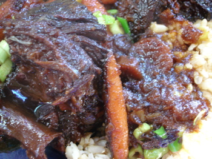

Mom tries David Chang's short ribs
On the third day they arose again from the dead…
It always amused me that one of the criteria for diagnosing an eating disorder from the book Fat is a Family Affair, by Judi Hollis is “Do you find the statement, ‘This is too rich’ confusing?”, because most food-lovers that I knew thought that statement was fairly confusing and I didn’t think we were all food addicts.
In the case of these short ribs, even I found them to be almost too rich. Short ribs alone are pretty rich, and this sauce, with all its flavors, cooked down to a syrupy consistency and spooned over the meat and rice, is extremely rich-tasting. I was really glad I had cooled the ribs off and lifted the fat from the casserole (actually, I wound up letting them sit for 2 days), because there was a lot of it and I think that helped. Poppy and Calvin loved them, though, so in that sense I guess it is another man-pleasing dinner.

Some of you may find the accompanying photograph to be disturbing in its detail; that’s because I think I may have figured out how to take close-up shots with my camera, but perhaps went overboard in this photo.
Comments
We each ate just two small ribs, and I think with the carrots and rice it didn’t end up feeling too rich and heavy. Did you like the flavor though?
Nice close-up, by the way!
I thought it was almost too intense-tasting, but like I said, Billy and Calvin both liked it. I’m not sure I would make the recipe again.
Add a comment